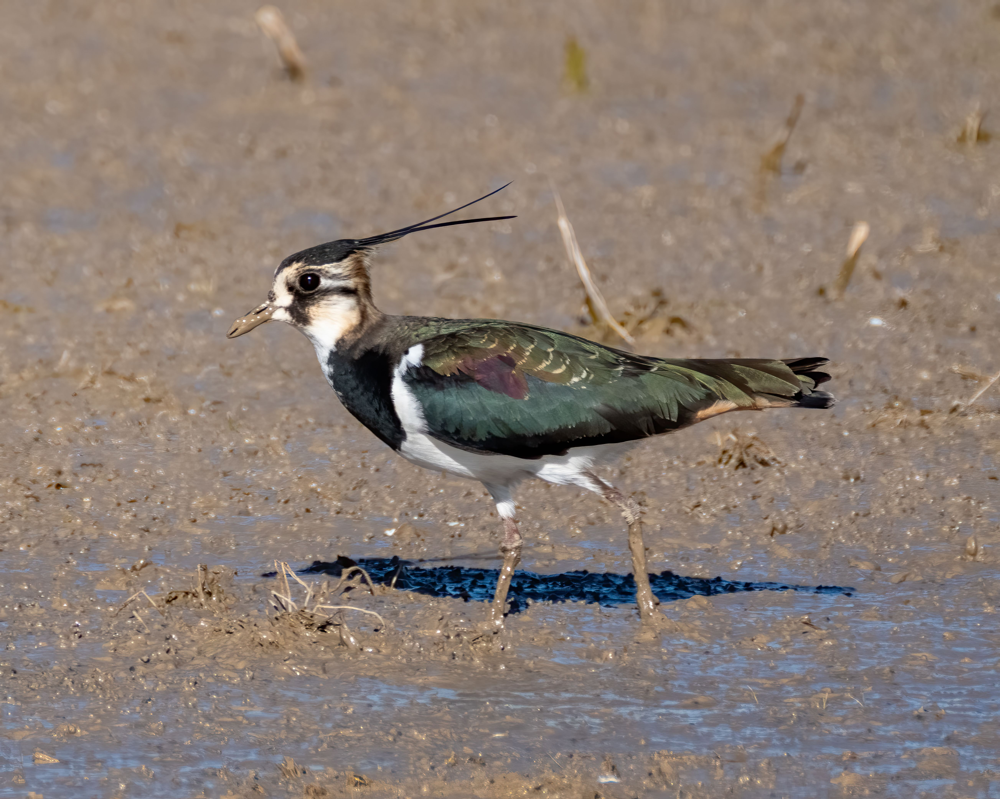

The Northern Lapwing is a distinctive plover with glossy dark green-black upperparts, white underparts, broad rounded wings, and a long, thin crest. Its striking appearance is especially noticeable during the breeding season, when males perform spectacular tumbling display flights. It breeds mainly in open grassland, farmland, moorland, and other open habitats, while outside the breeding season it may gather in large flocks on wetlands, mudflats, coastal fields, and agricultural land. It feeds mainly on earthworms, insects, larvae, and other small invertebrates. Compared with the smaller Little Ringed Plover, the Northern Lapwing is much larger, has a long crest, broader wings, and a strongly contrasting black-and-white appearance. It can also be separated from the Red-wattled Lapwing by its shorter legs, darker glossy upperparts, and long crest. Changes in land management and increased predation have contributed to breeding declines in parts of Europe.